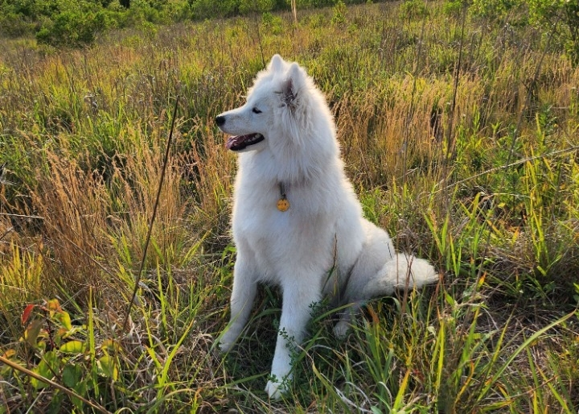

This is a fanpage for Moti, the Samoyed!
Welcome to Moti's Fanpage, a website dedicated to capturing and sharing the many moods of our beloved Samoyed, Moti. From his playful puppy days to his wise old age, Moti has always been a joy to be around. He loves nothing more than spending time with his family, going for walks in the park, and playing fetch in the yard.
